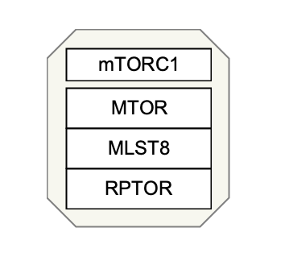

Background
A multiprotein complex (or protein complex) is a group of two or more associated polypeptide chains. The different polypeptide chains may have different functions. This is distinct from a multienzyme polypeptide, in which multiple catalytic domains are found in a single polypeptide chain. (Source: Wikipedia)
Your Mission
In this challenge you will draw the mTORC1 complex, which functions as a nutrient/energy/redox sensor and controls protein synthesis (Source: Wikipedia. This complex consists of 3 proteins; MTOR, MLST8 and RPTOR. In addtition to annotating the individual proteins, we will annotate the complex itself with an identifier from Complex Portal.

- Launch PathVisio and start a new blank pathway, select Homo sapiens as the organism.
- Add three data nodes of type Protein, and annotate them with Uniprot-TrEMBL identifiers for MTOR, MLST8 and RPTOR, respecitvely. You can use the built-in identifier search tool for this.
- Add a 4th node, and with the node selected, switch the node type to Complex in the Properties panel on the right.
- Next we will need to identify the correct identifier for the mTORC1 complex by searching the Complex Portal website. On this website, perform a simple search for "mTORC1", and select the entry for Homo sapiens. Find the ComplexAc identifier; it should be CPX-4473.
- In PathVisio, double-click on the new complex node. For Text label, enter mTORC1. In the Identifier field, enter the ComplexAc identifier (CPX-4473). Finally, select Complex Portal from the drop-down under Database.
- To visually distinguish the complex node from the three protein nodes, change the height of the complex node to 20. This is done by selecting the node and updating the height in the Properties panel on the right.
- Select all 4 nodes and click the Stack vertical centers button from the toolbar.
- With the two data nodes selected, right-click and select Create complex. Alternatively, you can use the keyboard shortcut Ctrl+P (Command+P on Mac) to create the complex.
- Done!
- Save your work as a GPML file under File > Save As.
- Drag-and-drop the GPML file below to check if it is correct.